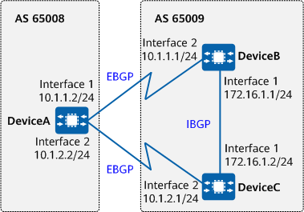

Example for Setting the MED to Control BGP Route Selection
Networking Requirements
Similar to the cost (or metric) used by an IGP, the MED is used to determine the optimal route when traffic enters an AS. When a BGP device learns multiple routes with the same destination address but different next hops from different EBGP peers, the route with the smallest MED value is selected as the optimal route if all other attributes are the same.
On the network shown in Figure 1, BGP is configured on all devices. DeviceA is in AS 65008, and DeviceB and DeviceC are in AS 65009. DeviceA establishes EBGP connections with DeviceB and DeviceC, and DeviceB establishes an IBGP connection with DeviceC. Traffic sent by DeviceA to 172.16.1.0/24 can enter AS 65009 through DeviceB or DeviceC. If the attributes excluding the MED of the routes advertised by Devices B and C to DeviceA are the same, you can change the MED value of the route to be advertised by DeviceB or DeviceC to DeviceA in order to determine the device through which traffic will enter AS 65009.

In this example, interface 1 and interface 2 represent 10GE0/0/1 and 10GE0/0/2, respectively.

To complete the configuration, you need the following data:
- In AS 65008, DeviceA's router ID: 1.1.1.1
- In AS 65009, DeviceB's router ID: 2.2.2.2, DeviceC's router ID: 3.3.3.3
- DeviceB's new MED value: 100
Precautions
During the configuration, note the following:
- To improve security, you are advised to deploy BGP security measures. For details, see "Configuring BGP Authentication." Keychain authentication is used as an example. For details, see Example for Configuring Keychain Authentication for BGP.
Configuration Roadmap
The configuration roadmap is as follows:
Establish EBGP connections between DeviceA and DeviceB, and between DeviceA and DeviceC, and establish an IBGP connection between DeviceB and DeviceC.
- Apply a route-policy to increase the MED value of the route advertised by DeviceB to DeviceA, so that DeviceA will send traffic to AS 65009 through DeviceC.
Procedure
- Assign an IP address to each interface involved. For detailed configurations, see Configuration Scripts.
- Configure BGP connections.
# Configure DeviceA.
[DeviceA] bgp 65008 [DeviceA-bgp] router-id 1.1.1.1 [DeviceA-bgp] peer 10.1.1.1 as-number 65009 [DeviceA-bgp] peer 10.1.2.1 as-number 65009 [DeviceA-bgp] quit
# Configure DeviceB.
[DeviceB] bgp 65009 [DeviceB-bgp] router-id 2.2.2.2 [DeviceB-bgp] peer 10.1.1.2 as-number 65008 [DeviceB-bgp] peer 172.16.1.2 as-number 65009 [DeviceB-bgp] ipv4-family unicast [DeviceB-bgp-af-ipv4] network 172.16.1.0 255.255.255.0 [DeviceB-bgp-af-ipv4] quit [DeviceB-bgp] quit
# Configure DeviceC.
[DeviceC] bgp 65009 [DeviceC-bgp] router-id 3.3.3.3 [DeviceC-bgp] peer 10.1.2.2 as-number 65008 [DeviceC-bgp] peer 172.16.1.1 as-number 65009 [DeviceC-bgp] ipv4-family unicast [DeviceC-bgp-af-ipv4] network 172.16.1.0 255.255.255.0 [DeviceC-bgp-af-ipv4] quit [DeviceC-bgp] quit
# Check the routing table of DeviceA.
[DeviceA] display bgp routing-table 172.16.1.0 24 BGP local router ID : 1.1.1.1 Local AS number : 65008 Paths: 2 available, 1 best, 1 select BGP routing table entry information of 172.16.1.0/24: From: 10.1.1.1 (2.2.2.2) Route Duration: 0d00h00m56s Direct Out-interface: 10GE0/0/1 Original nexthop: 10.1.1.1 Qos information : 0x0 AS-path 65009, origin igp, MED 0, pref-val 0, valid, external, best, select, pre 255 Advertised to such 2 peers: 10.1.1.1 10.1.2.1 BGP routing table entry information of 172.16.1.0/24: From: 10.1.2.1 (3.3.3.3) Route Duration: 0d00h00m06s Direct Out-interface: 10GE0/0/2 Original nexthop: 10.1.2.1 Qos information : 0x0 AS-path 65009, origin igp, MED 0, pref-val 0, valid, external, pre 255, not preferred for router ID Not advertised to any peers yet
The command output shows two valid routes to 172.16.1.0/24. The route with 10.1.1.1 as the next hop is the optimal route because the router ID of DeviceB is smaller.
- Configure the MED attribute.
# Change the MED value of the route advertised by DeviceB to DeviceA using a route-policy.
[DeviceB] route-policy 10 permit node 10 [DeviceB-route-policy] apply cost 100 [DeviceB-route-policy] quit [DeviceB] bgp 65009 [DeviceB-bgp] ipv4-family unicast [DeviceB-bgp-af-ipv4] peer 10.1.1.2 route-policy 10 export [DeviceB-bgp-af-ipv4] quit [DeviceB-bgp] quit
Verifying the Configuration
# Check the routing table of DeviceA.
[DeviceA] display bgp routing-table 172.16.1.0 24 BGP local router ID : 1.1.1.1 Local AS number : 65008 Paths: 2 available, 1 best, 1 select BGP routing table entry information of 172.16.1.0/24: From: 10.1.2.1 (3.3.3.3) Route Duration: 0d00h07m45s Direct Out-interface: 10GE0/0/2 Original nexthop: 10.1.2.1 Qos information : 0x0 AS-path 65009, origin igp, MED 0, pref-val 0, valid, external, best, select, pre 255 Advertised to such 2 peers: 10.1.1.1 10.1.2.1 BGP routing table entry information of 172.16.1.0/24: From: 10.1.1.1 (2.2.2.2) Route Duration: 0d00h00m08s Direct Out-interface: 10GE0/0/1 Original nexthop: 10.1.1.1 Qos information : 0x0 AS-path 65009, origin igp, MED 100, pref-val 0, valid, external, pre 255, not preferred for MED Not advertised to any peers yet
The command output shows that the MED value of the route with the next hop 10.1.1.1 (DeviceB) is 100 and the MED value of the route with the next hop 10.1.2.1 is 0. As a result, BGP selects the route with the smaller MED value.
Configuration Scripts
DeviceA
# sysname DeviceA # interface 10GE0/0/1 ip address 10.1.1.2 255.255.255.0 # interface 10GE0/0/2 ip address 10.1.2.2 255.255.255.0 # bgp 65008 router-id 1.1.1.1 peer 10.1.1.1 as-number 65009 peer 10.1.2.1 as-number 65009 # ipv4-family unicast peer 10.1.1.1 enable peer 10.1.2.1 enable # return
DeviceB
# sysname DeviceB # interface 10GE0/0/1 ip address 172.16.1.1 255.255.255.0 # interface 10GE0/0/2 ip address 10.1.1.1 255.255.255.0 # bgp 65009 router-id 2.2.2.2 peer 172.16.1.2 as-number 65009 peer 10.1.1.2 as-number 65008 # ipv4-family unicast network 172.16.1.0 255.255.255.0 peer 172.16.1.2 enable peer 10.1.1.2 enable peer 10.1.1.2 route-policy 10 export # route-policy 10 permit node 10 apply cost 100 # return
DeviceC
# sysname DeviceC # interface 10GE0/0/1 ip address 172.16.1.2 255.255.255.0 # interface 10GE0/0/2 ip address 10.1.2.1 255.255.255.0 # bgp 65009 router-id 3.3.3.3 peer 172.16.1.1 as-number 65009 peer 10.1.2.2 as-number 65008 # ipv4-family unicast network 172.16.1.0 255.255.255.0 peer 172.16.1.1 enable peer 10.1.2.2 enable # return